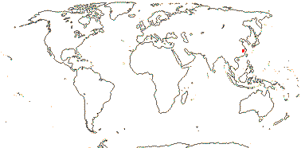

EMBRYOPSIDA Pirani & Prado
Gametophyte dominant, independent, multicellular, not motile, initially ±globular; showing gravitropism; acquisition of phenylalanine lysase [PAL], microbial terpene synthase-like genes +, triterpenoids produced by CYP716 enzymes, phenylpropanoid metabolism [lignans +, flavonoids + (absorbtion of UV radiation)], xyloglucans in primary cell wall, side chains charged; plant poikilohydrous [protoplasm dessication tolerant], ectohydrous [free water outside plant physiologically important]; thalloid, leafy, with single-celled apical meristem, tissues little differentiated, rhizoids +, unicellular; chloroplasts several per cell, pyrenoids 0; glycolate metabolism in leaf peroxisomes [glyoxysomes]; centrioles/centrosomes in vegetative cells 0, microtubules with γ-tubulin along their lengths [?here], interphase microtubules form hoop-like system; metaphase spindle anastral, predictive preprophase band + [with microtubules and F-actin; where new cell wall will form], phragmoplast + [cell wall deposition centrifugal, from around the anaphase spindle], plasmodesmata +; antheridia and archegonia jacketed, surficial; blepharoplast +, centrioles develop de novo, bicentriole pair coaxial, separate at midpoint, centrioles rotate, associated with basal bodies of cilia, multilayered structure + [4 layers: L1, L4, tubules; L2, L3, short vertical lamellae] (0), spline + [tubules from L1 encircling spermatid], basal body 200-250 nm long, associated with amorphous electron-dense material, microtubules in basal end lacking symmetry, stellate array of filaments in transition zone extended, axonemal cap 0 [microtubules disorganized at apex of cilium]; male gametes [spermatozoids] with a left-handed coil, cilia 2, lateral; oogamy; sporophyte multicellular, cuticle +, plane of first cell division transverse [with respect to long axis of archegonium/embryo sac], sporangium and upper part of seta developing from epibasal cell [towards the archegonial neck, exoscopic], with at least transient apical cell [?level], initially surrounded by and dependent on gametophyte, placental transfer cells +, in both sporophyte and gametophyte, wall ingrowths develop early; suspensor/foot +, cells at foot tip somewhat haustorial; sporangium +, single, terminal, dehiscence longitudinal; meiosis sporic, monoplastidic, MTOC [MTOC = microtubule organizing centre] associated with plastid, sporocytes 4-lobed, cytokinesis simultaneous, preceding nuclear division, quadripolar microtubule system +; wall development both centripetal and centrifugal, 1000 spores/sporangium, sporopollenin in the spore wall laid down in association with trilamellar layers [white-line centred lamellae; tripartite lamellae]; nuclear genome size [1C] <1.4 pg, main telomere sequence motif TTTAGGG, LEAFY and KNOX1 and KNOX2 genes present, ethylene involved in cell elongation; chloroplast genome with close association between trnLUAA and trnFGAA genes [precursors for starch synthesis], tufA gene moved to nucleus; mitochondrial trnS(gcu) and trnN(guu) genes +.
Many of the bolded characters in the characterization above are apomorphies of subsets of streptophytes along the lineage leading to the embryophytes, not apomorphies of crown-group embryophytes per se.
All groups below are crown groups, nearly all are extant. Characters mentioned are those of the immediate common ancestor of the group, [] contains explanatory material, () features common in clade, exact status unclear.
STOMATOPHYTES
Abscisic acid, L- and D-methionine distinguished metabolically; pro- and metaphase spindles acentric; sporophyte with polar transport of auxins, class 1 KNOX genes expressed in sporangium alone; sporangium wall 4≤ cells across [≡ eusporangium], tapetum +, secreting sporopollenin, which obscures outer white-line centred lamellae, columella +, developing from endothecial cells; stomata +, on sporangium, anomocytic, cell lineage that produces them with symmetric divisions [perigenous]; underlying similarities in the development of conducting tissue and of rhizoids/root hairs; spores trilete; shoot meristem patterning gene families expressed; MIKC, MI*K*C* genes, post-transcriptional editing of chloroplast genes; gain of three group II mitochondrial introns, mitochondrial trnS(gcu) and trnN(guu) genes 0.
[Anthocerophyta + Polysporangiophyta]: gametophyte leafless; archegonia embedded/sunken [only neck protruding]; sporophyte long-lived, chlorophyllous; cell walls with xylans.
POLYSPORANGIOPHYTA†
Sporophyte well developed, branched, branching apical, dichotomous, potentially indeterminate; hydroids +; stomata on stem; sporangia several, terminal; spore walls not multilamellate [?here].
TRACHEOPHYTA†
Vascular tissue + [tracheids, walls with bars of secondary thickening].
EXTANT TRACHEOPHYTA / VASCULAR PLANTS
Sporophyte with photosynthetic red light response, stomata open in response to blue light; plant homoiohydrous [water content of protoplasm relatively stable]; control of leaf hydration passive; plant endohydrous [physiologically important free water inside plant]; (condensed or nonhydrolyzable tannins/proanthocyanidins +); xyloglucans with side chains uncharged [?level], in secondary walls of vascular and mechanical tissue; lignins +; stem apex multicellular, with cytohistochemical zonation, plasmodesmata formation based on cell lineage; tracheids +, in both protoxylem and metaxylem, G- and S-types; sieve cells + [nucleus degenerating]; endodermis +; leaves/sporophylls spirally arranged, blades with mean venation density ca 1.8 mm/mm2 [to 5 mm/mm2], all epidermal cells with chloroplasts; sporangia adaxial, columella 0; tapetum glandular; ?position of transfer cells; MTOCs not associated with plastids, basal body 350-550 nm long, stellate array in transition region initially joining microtubule triplets; suspensor +, shoot apex developing away from micropyle/archegonial neck [from hypobasal cell, endoscopic], root lateral with respect to the longitudinal axis of the embryo [plant homorhizic].
[MONILOPHYTA + LIGNOPHYTA]Sporophyte endomycorrhizal [with Glomeromycota]; growth ± monopodial, branching spiral; roots +, endogenous, positively geotropic, root hairs and root cap +, protoxylem exarch, lateral roots +, endogenous; G-type tracheids +, with scalariform-bordered pits; leaves with apical/marginal growth, venation development basipetal, growth determinate; sporangium dehiscence by a single longitudinal slit; cells polyplastidic, MTOCs diffuse, perinuclear, migratory; blepharoplasts +, paired, with electron-dense material, centrioles on periphery, male gametes multiciliate; chloroplast long single copy ca 30kb inversion [from psbM to ycf2]; mitochondrion with loss of 4 genes, absence of numerous group II introns; LITTLE ZIPPER proteins.
LIGNOPHYTA†
Sporophyte woody; stem branching lateral, meristems axillary; lateral root origin from the pericycle; cork cambium + [producing cork abaxially], vascular cambium bifacial [producing phloem abaxially and xylem adaxially].
SEED PLANTS†
Plants heterosporous; megasporangium surrounded by cupule [i.e. = unitegmic ovule, cupule = integument]; pollen lands on ovule; megaspore germination endosporic [female gametophyte initially retained on the plant].
EXTANT SEED PLANTS / SPERMATOPHYTA
Plant evergreen; nicotinic acid metabolised to trigonelline, (cyanogenesis via tyrosine pathway); microbial terpene synthase-like genes 0; primary cell walls rich in xyloglucans and/or glucomannans, 25-30% pectin [Type I walls]; lignin chains started by monolignol dimerization [resinols common], particularly with guaiacyl and p-hydroxyphenyl [G + H] units [sinapyl units uncommon, no Maüle reaction]; root stele diarch to pentarch, xylem and phloem originating on alternating radii, cork cambium deep seated; stem apical meristem complex [with quiescent centre, etc.], plasmodesma density in SAM 1.6-6.2[mean]/μm2 [interface-specific plasmodesmatal network]; eustele +, protoxylem endarch, endodermis 0; wood homoxylous, tracheids and rays alone, tracheid/tracheid pits circular, bordered; mature sieve tube/cell lacking functioning nucleus, sieve tube plastids with starch grains; phloem fibres +; cork cambium superficial; leaf nodes 1:1, a single trace leaving the vascular sympodium; leaf vascular bundles amphicribral; guard cells the only epidermal cells with chloroplasts, stomatal pore with active opening in response to leaf hydration, control by abscisic acid, metabolic regulation of water use efficiency, etc.; axillary buds +, exogenous; prophylls two, lateral; leaves with petiole and lamina, development basipetal, lamina simple; sporangia borne on sporophylls; spores not dormant; microsporophylls aggregated in indeterminate cones/strobili; grains monosulcate, aperture in ana- position [distal], primexine + [involved in exine pattern formation with deposition of sporopollenin from tapetum there], exine and intine homogeneous, exine alveolar/honeycomb; ovules with parietal tissue [= crassinucellate], megaspore tetrad linear, functional megaspore single, chalazal, sporopollenin 0; gametophyte ± wholly dependent on sporophyte, development initially endosporic [apical cell 0, rhizoids 0, etc.]; male gametophyte with tube developing from distal end of grain, male gametes two, developing after pollination, with cell walls; female gametophyte initially syncytial, walls then surrounding individual nuclei; embryo cellular ab initio, suspensor short-minute, embryonic axis straight [shoot and root at opposite ends; plant allorhizic], cotyledons 2; embryo ± dormant; chloroplast ycf2 gene in inverted repeat, trans splicing of five mitochondrial group II introns, rpl6 gene absent; whole nuclear genome duplication [ζ - zeta - duplication], two copies of LEAFY gene, PHY gene duplications [three - [BP [A/N + C/O]] - copies], 5.8S and 5S rDNA in separate clusters.
EXTANT GYMNOSPERMS / PINOPHYTA / ACROGYMNOSPERMAE
Biflavonoids +; cuticle wax tubules with nonacosan-10-ol; ferulic acid ester-linked to primary unlignified cell walls, silica usu. low; root protophloem not producing sieve tubes, with secretory cells, sieve area of sieve tube with small pores generally less than 0.8 µm across that have cytoplasm and E.R., joining to form a median cavity in the region of the middle lamella, Strasburger/albuminous cells associated with sieve tubes [the two not derived from the same immediate mother cell], phloem fibres +; sclereids +, ± tracheidal transfusion tissue +; stomatal poles raised above pore, no outer stomatal ledges or vestibule, epidermis lignified; buds perulate/wiith cataphylls; lamina development marginal; plants dioecious; microsporangia abaxial, dehiscing by the action of the epidermis [= exothecium]; pollen tectate, endexine lamellate at maturity, esp. intine with callose; ovules aggregated into strobili, erect, pollen chamber formed by breakdown of nucellar cells, nucellus massive; ovules increasing considerably in size between pollination and fertilization, but aborting unless pollination occurs; ovule with pollination droplet; pollen grain germinates on ovule, usu. takes two or more days, tube with wall of pectose + cellulose microfibrils, branched, growing at up to 10(-20) µm/hour, haustorial, breaks down sporophytic cells; male gametophyte of two prothallial cells, a tube cell, and an antheridial cell, the latter producing a sterile cell and 2 gametes; male gametes released by breakdown of pollen grain wall, with >1000 cilia, basal body 800-900 nm long; fertilization 7 days to 12 months or more after pollination, to ca 2 mm from receptive surface to egg; female gametophyte initially with central vacuole and peripheral nuclei plus cytoplasm, cellularization/alveolarization by centripetal formation of anticlinal walls, the inner periclinal face open, with nuclei connected to adjacent nuclei by spindle fibres; seeds "large" [ca 8 mm3], but not much bigger than ovule, with morphological dormancy; testa mainly of coloured sarcoexotesta, scleromesotesta, and ± degenerating endotesta; first zygotic nuclear division with chromosomes of male and female gametes lining up on separate but parallel spindles, embryogenesis initially nuclear, embryo ± chlorophyllous; gametophyte persists in seed; plastid and mitochondrial transmission paternal; genome size [1C] 10< pg [1 pg = 109 base pairs]; two copies of LEAFY gene [LEAFY, NEEDLY] and three of the PHY gene, [PHYP [PHYN + PHYO]], chloroplast inverted repeat with duplicated ribosomal RNA operons, second intron in the mitochondrial rps3 gene [group II, rps3i2].
[Ginkgoales + Cycadales]: mucilage +; phloem with scattered fibres; cataphylls +; double leaf trace; lamina/leaflet midrib 0; pollen tube branched, growing away from the ovule; spermatogenous cells delimited by circular anticlinal wall, zooidogamy, male gametes with cell wall, released from the swollen proximal part of the tube, cilia numerous; female gametophyte with chlorophyll, photsynthesising [at least under some conditions]; seeds with coloured sarcoexotesta, scleromesotesta, and ± degenerating endotesta; germination hypogeal, cryptocotylar.
Age. Estimates for the age of this node are (257.7-)163.3(-75.9) m.y. in Zhang et al. (2014) but only ca 107 m.y.a. in Z. Wu et al. (2014).
GINKGOALES Gorozh. Main Tree.
VAM present; biflavones, non-hydrolysable tannins +; tree branched; compression wood + [reaction wood: much-thickened/lignified fibres on abaxial side of branch-stem junction]; nodes 1:2, venation dichotomising, open; wood pycnoxylic; torus/margo pits + [tracheid side walls], pits bordered; phloem with scattered fibres; double leaf trace +; all leaves with axillary buds; lamina lacking a midrib, venation dichotomous; microsporangiophore/filament simple with terminal microsporangia; microsporangia 2/microsporophyll, pendulous, dehiscing by the action of the hypodermis [endothecium]; exine thin [2³ µm thick]; megasporophyll single; ovules 2(-4) together, terminal, nucellar beak +, with basal collar; female gametophyte with chlorophyll, photosynthesising; generative cell delimited by circular anticlinal wall, pollen tube penetrating between sporophytic cells, growth non-destructive, wall with ß-(1,3)(1,4)-glucan; seed fleshy, inner fleshy layer alone vascularized; germination cryptocotylar; one duplication in the PHYO clade. - 1 family, 1 genus, 1 species [all rather redundant].
Age. Tank et al. (2015: Table S2) suggested an age of around 265.2 m.y. for Ginkgoaceae.
Ginkgoales were almost world-wide in distribution and included several genera in the Mesozoic. They have a possible origin from Palaezoic pteridosperms, perhaps in the Upper Carboniferous (Thomas & Spicer 1987; Zhou 1997). The morphology of these early Ginkgo-like plants is uncertain, but the ovules may have been more numerous, very differently arranged and some at least were inverted (and/or platyspermic). Ginkgo-like leaves are known from the Permian onwards (see Zhou & Zhang 2003). For the early Caenozoic fossil history of Ginkgo, see Manchester et al. (2009).
[Ginkgoales + Pinales]: ?
This clade was estimated to be around 84.35 m.y.o. (!: Naumann et al. 2013) or over three times as old, (327-)304(-283) m.y.o. (Clarke et al. 2011).
Note: Boldface denotes possible apomorphies, (....) denotes a feature common in the clade, exact status uncertain, [....] includes explanatory material. Note that the particular node to which many characters, particularly the more cryptic ones, should be assigned is unclear. This is partly because homoplasy is very common, in addition, basic information for all too many characters is very incomplete, frequently coming from taxa well embedded in the clade of interest and so making the position of any putative apomorphy uncertain. Then there are the not-so-trivial issues of how character states are delimited and ancestral states are reconstructed (see above).
Phylogeny. For discussion on the relationships of Ginkgoales, see above. Given the uncertainty in our knowledge of the relationships between the major seed-plant clades, direct links to Cycadales, Gnetales, flowering plants, and Pinales are provided here.
Ginkgoales and relatives have a long and rich fossil record dating back to the later Permian (Z.-Y. Zhou 2009; Pott et al. 2016 and references).
Includes: Ginkgoaceae.
Synonymy: Ginkgoidae Engler - Ginkgoopsida Engler - Ginkgoophytina Reveal - Ginkgoophyta Bessey
GINKGOACEAE Engler Back to Ginkgoales
Plant with lignotubers; resin, mucilage +; cork cambium subhypodermal; sclereids +; long and short shoots alternating along the axis, the latter also axillary, bearing sporophores/strobili, wood there manoxylic; stomata ± stephanocytic s. str.; leaves deciduous; (cotyledons 3); n = 12, nuclear genome size [1C] ca 12 pg.
1/1: Ginkgo biloba. E. China, but perhaps now only in cultivation. [Photo - Microsporangia, Ovules, and Seeds.]
Evolution: Divergence & Distribution. For the phylogeography of Ginkgo biloba, see Gong et al. (2008). Ecological evidence suggested to C. Q. Tang et al. (2012) that wild populations still persist.
Genes & Genomes. For nuclear genome size, see Zonnefeld (2012). Dioecy may be associated with chromosomal differentiation (female xx, male xy), but c.f. Hizume (1997).
The chloroplast genome has a somewhat contracted inverted repeat (Lin et al. 2012).
Chemistry, Morphology, etc. For stem growth and anatomy, see Little et al. (2013 and references). The leaf is innervated by two leaf traces that originate from independent cauline vascular sympodia; there are a very few anastomoses between the veins in the blade. Rudall et al. (2012) discussed stomatal development; some authors have suggested that the cells surrounding the stomata have small papillae ± overarching the guard cells.
The integument is initiated in two places, but the two parts soon become confluent. The nuclei of the female gametophyte have the same DNA content as diploid cells. The chalazal cell of the linear tetrad develops to form the female gametophyte (Friedman & Gifford 1997). An AGAMOUS gene is involved in the development of the fleshy part of the seed (Lovisetto et al. 2011, 2015).
For additional information, see the papers in Hori et al. (1997) and Crane (2013) both general, Dute (1994: torus:margo pits), Bonacorsi and Seago (2014: root anatomy), Dörken (2014: vegetative anatomy and morphology), Friedman (1987: male gametophyte development), Soma (1997: female gametophyte and embryogeny), Mundry and Stützel (2004b: stamen and leaf development), Douglas et al. (2007: ovule), Dogra (1992) and L. Wang et al. (2011), both embryology), Friedman and Goliber (1986: photosynthesis in the female gametophyte - see also Cycadales), and the Gymnosperm Database (general).
){kind=link}
){kind=link}
![Seeds.]](javascript:showImage('http://arnica.csustan.edu/photos/800/Ginkgo_seeds_1.jpg',600,500)){kind=link}